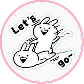

✧ 巴士 / 小巴到站 ✦

251A
上村
09:04 09:24 09:44
64K
大埔墟站
08:54 08:54 09:04
64K
元朗(西)
08:59 09:05 09:17
71
河背
09:04 09:18 09:33
71
元朗
09:03 09:10 09:25
71A
長莆
08:58 09:23 09:43
71A
錦上路站
09:16 09:46
石崗現況 30°C 元朗公園 · 濕度 79% · 石崗2小時內有機會落雨 · 大致天晴，但局部地區有驟雨。日間酷熱，市區最高氣溫約34度，新界再高一兩度。吹輕微至和緩西至西南風。
08:54